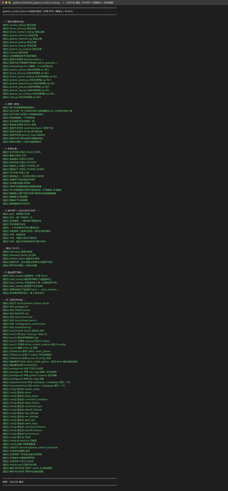
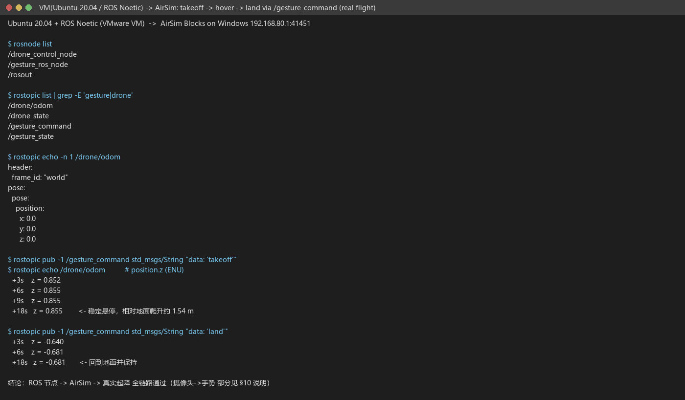
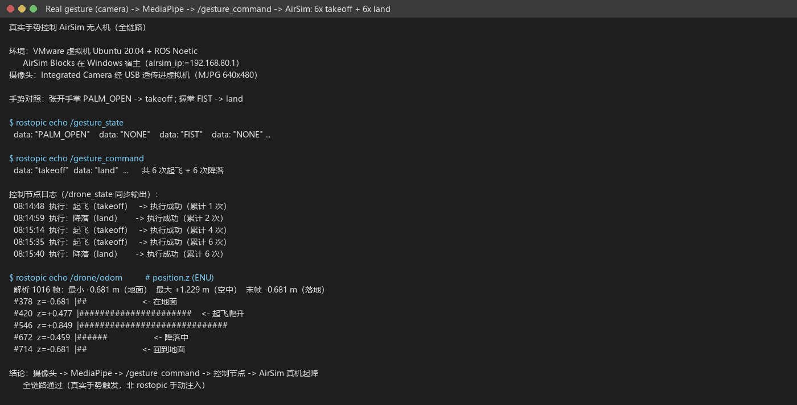
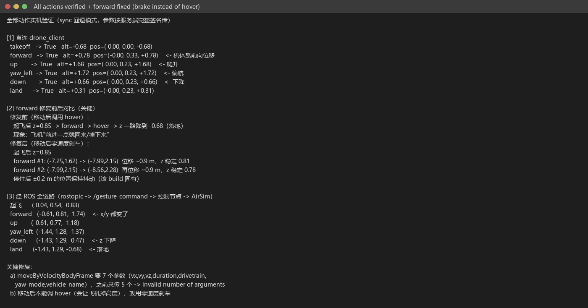
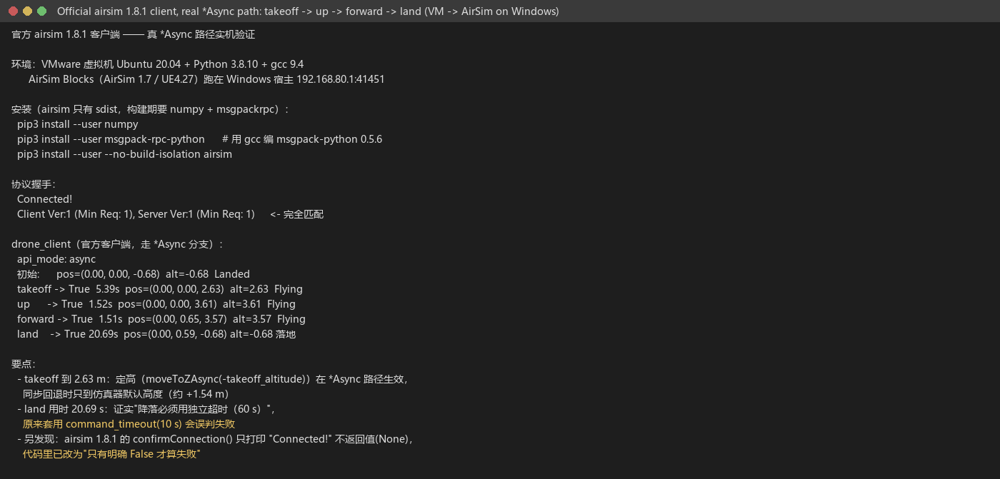

手势控制 AirSim 无人机
用摄像头 + MediaPipe 识别手部手势，把识别结果转换成指令，通过 ROS 话题交给
控制节点，由控制节点调用 AirSim 多旋翼 API 完成 起飞 / 降落 / 悬停 / 前进 /
上升 / 下降 / 紧急停止，并把载具位姿以 nav_msgs/Odometry（ENU）回传。
源码位于 src/air/gesture_control_drone，
完整运行细节（环境、参数、排查）见模块
README.md。
1. 它解决什么问题
用"抬手"指挥无人机，难点不在识别单个手势，而在让两半程序对同一套词、并且 把 AirSim 的多旋翼接口用对：
摄像头 -> MediaPipe -> 手势 token -> 指令 token -> AirSim 多旋翼 API
└── 感知节点（发布）──┘└──── 控制节点（订阅 + 执行 + 回传）────┘
│
└─> /drone/odom (Odometry) /drone_state
- 手势与指令的映射只在一处定义（
scripts/gesture_map.py），两个节点import同一份常量；AirSim 的每个动作都有实现，缺一个就启动即报错； - 线上传输一律用 ASCII token（
PALM_OPEN/takeoff…），中文只用于日志与 界面，避免编码与别名问题； - 识别结果经过去抖 + 边沿触发 + 冷却才发布：同一个手势一直举着只发一条指令；
- 控制节点把耗时动作放到工作线程执行，订阅回调只入队；每次 RPC 调用都有 超时保护，仿真器卡住也不会把节点拖死；
- 有安全限幅：限速、限高、限低；紧急停止默认悬停，不再空中锁桨。
2. 手势与指令
| 手势 | 手势 token | 指令 token | 动作 |
|---|---|---|---|
| 张开手掌 | PALM_OPEN |
takeoff |
解锁 → 起飞 → 爬升到 takeoff_altitude → 悬停（定高仅 *Async 路径生效，同步回退由仿真器默认高度决定，实测约 +1.54 m） |
| 握拳 | FIST |
land |
降落 |
| 食指指向 | POINT |
forward |
机体系向前飞 speed × move_duration |
| 胜利手势 | VICTORY |
up |
上升一档（受 max_altitude 限制） |
| 拇指向下 | THUMB_DOWN |
down |
下降一档（受 min_altitude 限制） |
| 拇指向上 | THUMB_UP |
hover |
原地悬停（稳定） |
| OK 手势 | OK |
estop |
紧急停止（默认悬停，可配 land/disarm） |
另外还有两个不占用手指的指令，可直接用话题触发（便于联调/答辩演示）：
yaw_left / yaw_right（按 yaw_rate 偏航）与 home（返航到原点上方）。
3. 环境要求
| 位置 | 项目 | 版本 |
|---|---|---|
| 宿主 | 操作系统 | Windows 10/11 |
| 宿主 | 模拟器 | AirSim（Blocks，UE 4.27，RPC 41451） |
| 客户机 | 操作系统 | Ubuntu 20.04.6 |
| 客户机 | ROS | Noetic（ROS 1） |
| 客户机 | Python | 3.8 |
| 客户机 | 依赖 | python3-opencv python3-numpy python3-pil（apt）mediapipe(0.10.x) airsim（pip，见 requirements.txt） |
摄像头必须接在跑 ROS 的那台机器上；虚拟机里需要先把 USB 摄像头透传进来。 用的是经典版 AirSim 时客户端是
airsim（不是cosysairsim）。
4. 运行
# 1) 编译
cd ~/uav_ws && catkin_make && source devel/setup.bash
# 2) 宿主机启动 AirSim 仿真器，并放行 41451 端口
# 3) 启动本模块（跨机部署时用 airsim_ip 指定宿主 IP）
roslaunch gesture_control_drone main.launch airsim_ip:=192.168.80.1
# 4) 只看识别效果、不动飞机
roslaunch gesture_control_drone main.launch start_drone_control:=false show_window:=true
# 5) 没有 ROS 也能验证手势与词表（单机演示，画一台"虚拟无人机"）
rosrun gesture_control_drone gesture_demo.py
预期日志（起手"张开手掌"）：
[gesture] 已启动：摄像头索引 0，640x480，10.0 Hz
[gesture] 手势 -> 指令：张开手掌->起飞，握拳->降落，食指指向->前进，胜利手势->上升，拇指向下->下降，拇指向上->悬停，OK 手势->紧急停止
[gesture] 识别到 张开手掌
[gesture] 发布指令 起飞（takeoff）
[drone] 已启动：订阅 /gesture_command，AirSim 192.168.80.1:41451，estop_action=hover，起飞高度 3.0m，限速 3.0 m/s，限高 30.0 m，指令冷却 1.5s
Connected! AirSim 192.168.80.1:41451
[drone] 执行成功：起飞（累计 1 次）
5. 话题接口
| 方向 | 话题 | 类型 | 说明 |
|---|---|---|---|
| 发布 | /gesture_command |
std_msgs/String |
指令 token，边沿触发 |
| 发布 | /gesture_state |
std_msgs/String |
当前识别到的手势 token（变化时才发） |
| 订阅 | /gesture_command |
std_msgs/String |
控制节点订阅；词表外的字符串会被忽略并告警 |
| 发布 | /drone/odom |
nav_msgs/Odometry |
载具位姿与速度（ENU，frame_id=world），可加进 RViz |
| 发布 | /drone_state |
std_msgs/String |
执行结果，如 takeoff OK / down FAIL 已到最低高度… |
排查"为什么没触发"：
rostopic echo /gesture_state # 识别有没有出结果
rostopic echo /gesture_command # 指令有没有发出来
rostopic echo /drone_state # 执行成功/失败原因
rostopic echo /drone/odom # 位姿（确认飞机真的动了）
rostopic pub -1 /gesture_command std_msgs/String "data: 'takeoff'" # 绕过识别直接测执行
为什么直连 AirSim、而不是走
carlair_ros_bridge+/uav/cmd_vel？ 本轮验证用的是经典版 AirSim（Blocks, UE 4.27），这套环境里没有carlair_ros_bridge（它服务于 CarlaAir / Cosys-AirSim 那套栈）。直连时桥接层原本 提供的安全逻辑由本模块自己补齐：指令冷却、单次 RPC 超时（command_timeout， 超时判失败而非永久阻塞）、限速/限高/限低、退出时先悬停再交还控制权、 紧急停止三选一。若之后接入 CarlaAir 栈，只需把drone_client.py换成发布/uav/cmd_vel——它是唯一与仿真器耦合的模块，感知/词表/闸门那一层不用动。
6. 参数
参数在 config/gesture_control.yaml，由 launch 载入各节点的私有命名空间。
| 参数 | 默认 | 说明 |
|---|---|---|
camera_index |
0 | 摄像头索引，打不开时自动尝试 0~4 |
show_window |
false | 是否弹出识别预览窗 |
publish_rate |
10.0 | 识别循环频率 (Hz) |
stable_frames |
3 | 连续多少帧识别到同一手势才算数（去抖） |
command_cooldown |
1.5 | 同一条指令的最小间隔 (s) |
command_topic |
/gesture_command |
指令话题（两端共用） |
airsim/ip |
127.0.0.1 | 仿真器地址；跨机填宿主 IP |
airsim/port |
41451 | RPC 端口 |
airsim/vehicle_name |
空 | 留空 = 默认载具（Drone1） |
estop_action |
hover | 紧急停止：hover / land / disarm（空中锁桨会坠落） |
takeoff_altitude |
3.0 | 起飞后爬升高度 (m)，不得超过 max_altitude |
speed |
1.0 | 前进/上升/下降速度 (m/s) |
max_speed |
3.0 | 速度上限 (m/s) |
max_altitude |
30.0 | 高度上限 (m) |
min_altitude |
0.5 | 高度下限 (m)，到这里拒绝下降 |
move_duration |
1.0 | 单次位移/偏航持续时间 (s) |
yaw_rate |
30.0 | 偏航角速度 (deg/s) |
command_timeout |
10.0 | 单次 RPC 超时 (s)，超时视为失败 |
takeoff_timeout |
60.0 | 起飞（含 moveToZAsync 定高）超时 (s)；慢仿真器可调大 |
land_timeout |
60.0 | 降落超时 (s)；3 m 降落实测约 14~20 s，不能用 command_timeout |
state_lock_timeout |
0.1 | 读状态抢不到 RPC 锁时的等待上限 (s)；降落时锁会被占 20 s，取值必须很短，否则 /drone/odom 会停更 |
state_rate |
5.0 | /drone/odom 发布频率 (Hz)，0 = 关闭 |
connect_retries |
3 | 连接 AirSim 的重试次数 |
7. 自测
# 离线回归（不需要 ROS / 摄像头 / 仿真器）
python3 tests/test_gesture_control_local.py
覆盖：脚本语法、词表一致性（7 手势→7 动作、10 条指令都有实现）、手势分类
（含 OK / 拇指朝上朝下）、去抖/边沿/冷却、跨平台摄像头、AirSim 全部动作
（解锁→定高→悬停顺序、机体系速度、偏航、返航回退、急停三语义）、安全限幅
（限速/限高/限低）、RPC 超时保护、NED→ENU 状态转换、七种手势的端到端链路、
Odometry 回传、以及工程文件约定。
8. 常见问题
| 现象 | 原因与处理 |
|---|---|
无法打开摄像头（已尝试索引 [0,1,2,3,4]…） |
摄像头没接在 ROS 机器上 / 没透传进虚拟机 / 被占用。ls /dev/video* 确认；可用 GESTURE_CAMERA_BACKEND=CAP_V4L2 |
连接 AirSim x.x.x.x:41451 失败 |
仿真器没启动、airsim_ip 填错、或 41451 被防火墙拦（Windows 需加入站规则） |
缺少 airsim 客户端：pip3 install airsim |
只装了 apt 依赖。经典 AirSim 用 airsim，Cosys-AirSim 才用 cosysairsim |
| 手势识别到了但飞机不动 | 看 /gesture_command；没有 → 去抖参数或手势不在词表；有 → 看 /drone_state 与 [drone] 日志 |
| 一直举着手，指令只发一次 | 设计如此（边沿触发）。手放下再举起才再次触发 |
已到最大高度 / 已到最低高度 |
触发了 max_altitude / min_altitude 保护；改参数或改用降落 |
| 起飞后高度不对 | 检查 takeoff_altitude；AirSim 的 takeoffAsync 只到默认高度，本模块会再 moveToZAsync 定高 |
| 中文显示成方块 | 缺中文字体；Ubuntu 装 fonts-wqy-zenhei，Windows 自带 simhei |
| 手指旋转超过 90° 后识别率下降 | 手指伸展判定基于"指尖在 PIP 关节上方"的启发式，掌心朝镜头、手指大致朝上时最稳 |
9. 运行证据
图片说明：本节所有图片都由
tools/log_to_png.py从真实终端输出渲染而成，不是系统截屏；对应的原始文本见各小节代码块。
9.1 离线回归（本机真实输出）

上图由 tools/log_to_png.py 从本机真实终端输出生成（不是拍照、不是外链），
复现命令：
python3 tests/test_gesture_control_local.py 2>&1 | tee /tmp/local_test.log
python3 tools/log_to_png.py /tmp/local_test.log \
docs/img/air/gesture_control_drone/local_test.png \
--title "python3 tests/test_gesture_control_local.py"
9.2 虚拟机内 ROS → AirSim 真机飞行（实测）
在 Ubuntu 20.04 + ROS Noetic 虚拟机里跑节点，AirSim Blocks 跑在 Windows 宿主上
（airsim_ip:=192.168.80.1），通过 rostopic 下发指令验证了完整控制链路：
节点：/drone_control_node /gesture_ros_node /rosout
话题：/drone/odom /drone_state /gesture_command /gesture_state
/drone/odom frame_id = "world"
下发 takeoff 之后（/drone/odom 的 position.z，ENU）：
+3s z = 0.852
+6s z = 0.855
+18s z = 0.855 ← 稳定悬停（相对地面爬升约 1.54 m）
下发 land 之后：
+3s z = -0.640
+6s z = -0.681 ← 回到地面并保持

这一步证明 ROS 节点 → AirSim → 真实起降 是通的；
摄像头 → MediaPipe → 手势 这一段见下面的说明。
9.3 实跑才暴露的两个坑（已修）
catkin_install_python不能用来装"辅助模块" 它在 devel 空间给每个脚本生成的是启动器（exec(compile(...))）， 被启动的文件能跑，但from drone_client import AirSimDrone会ImportError—— 因为拿到的是启动器而不是真模块。 → 现在只把 4 个入口（main/gesture_ros_node/drone_control_node/gesture_demo）交给catkin_install_python，辅助模块改用install(FILES)； 节点里再加一段sys.path引导，保证从源码目录也能 import。- VMware 透传的摄像头默认格式读不到帧
/dev/video0能open，但cap.read()一直select() timeout（默认 YUYV 720p 带宽不够）。→camera_utils.open_capture()现在默认设 MJPG（可用GESTURE_CAMERA_FOURCC覆盖）并降到 640×480， 同一台机器上立刻出画面（shape=(480, 640, 3)）。
9.4 真实手势 → 真机起降（完整链路）
摄像头（Integrated Camera，USB 透传进虚拟机）→ MediaPipe → /gesture_command
→ 控制节点 → AirSim，全程由真人做手势触发：

$ rostopic echo /gesture_state -> "PALM_OPEN" / "FIST"（中间夹 "NONE"）
$ rostopic echo /gesture_command -> "takeoff" ×6 / "land" ×6
$ rostopic echo /drone/odom -> position.z: -0.681(地面) → +1.229(空中) → -0.681(落地)
控制节点对 6 次起飞、6 次降落全部记录 执行成功（见上图时间戳）。
同步回退模式的结果语义（如实说明）：客户端没有
*Async时，同步takeoff/land是"发完即弃"，节点只能确认命令已下发，拿不到 AirSim 的执行结果。 例如飞机已在空中再发takeoff，AirSim 会返回Cannot perform takeoff because vehicle is already moving，但节点侧仍按"已下发"记录。 有*Async时join()会把异常抛出来。
9.5 全部动作实机验证
forward / up / yaw_left / down 在修复"按服务端完整签名传参"之后都能真实驱动飞机：

9.6 官方客户端（airsim 1.8.1）—— 真 *Async 路径实机验证
前面的 9.2~9.5 都是走同步回退分支（等价 msgpack-rpc 客户端）。这一节用官方 airsim 客户端，
走真实 takeoffAsync().join() / moveByVelocityBodyFrameAsync() 路径：

协议：Connected! Client Ver:1 (Min Req: 1), Server Ver:1 (Min Req: 1)
api_mode: async
初始: alt=-0.68 Landed
takeoff -> True 5.39s alt=2.63 Flying <- 定高生效（moveToZAsync）
up -> True 1.52s alt=3.61 Flying
forward -> True 1.51s y=0.65 Flying <- 机体系前向位移
land -> True 20.69s alt=-0.68 落地
两个额外结论：
- 定高只在
*Async路径生效：这里takeoff到 2.63 m（takeoff_altitude=3.0）， 而同步回退只到仿真器默认高度（约 +1.54 m）。2.63 m 比设定的 3.0 m 低 0.37 m，是
moveToZAsync的减速/lookahead造成的稳态误差 （AirSim 侧不做到绝对到位），不是控制逻辑的问题；要更贴近设定值可调大moveToZAsync的速度或在目标点附近补一次moveToZAsync。 land用了 20.69 s：证实必须给降落独立超时（land_timeout=60 s）， 套用command_timeout(10 s) 会误判失败。 同样因为它整段持锁，读状态必须用state_lock_timeout（见 §6）而不是干等， 否则这 20 s 里/drone/odom不会更新。
安装方式（airsim 在 PyPI 只有 sdist，构建期要 numpy 和 msgpackrpc）：
sudo apt install -y gcc python3-dev # msgpack-python 0.5.6 需要编译
pip3 install --user numpy
pip3 install --user msgpack-rpc-python # 会现场编出 msgpack-python 0.5.6
pip3 install --user --no-build-isolation airsim
另外实测发现：airsim 1.8.1 的
confirmConnection()只打印Connected!不返回值（None）， 早期代码用if not confirmConnection()会误判为失败；现已改为"只有明确False才算失败"。
10. 客户端兼容层与已知坑
10.1 先澄清一个容易误判的点
takeoffAsync / landAsync / hoverAsync / moveToZAsync / goHomeAsync 都是
Python 客户端的方法，内部只是 call_async('takeoff', ...) 之类的包装：
# microsoft/AirSim PythonClient/airsim/client.py
def takeoffAsync(self, timeout_sec=20, vehicle_name=''):
return self.client.call_async('takeoff', timeout_sec, vehicle_name)
def goHomeAsync(self, timeout_sec=3e+38, vehicle_name=''):
return self.client.call_async('goHome', timeout_sec, vehicle_name)
也就是说 服务端从来只有 takeoff / land / hover / goHome（所有 AirSim 版本都一样），
"异步"是客户端把请求发出去后不等结果。所以"服务端没有 takeoffAsync"不是老 build 的特征。
本模块的 api_mode 只解决另一个问题：某些客户端（例如自写的精简客户端、很老的
Python 客户端）不提供 *Async 方法，那时回退到同名同步方法：
| 客户端方法 | 服务端方法 | 缺 *Async 时的回退 |
|---|---|---|
takeoffAsync(timeout) |
takeoff |
takeoff(timeout, vehicle_name)，阻塞 |
landAsync(timeout) |
land |
land(timeout, vehicle_name)，阻塞 |
hoverAsync() |
hover |
hover(vehicle_name) |
moveToZAsync(z, v) |
moveToZ |
moveToZ(z, velocity, timeout, yaw_mode, lookahead, adaptive, vehicle_name) —— 7 个参数 |
goHomeAsync(timeout) |
goHome |
goHome(timeout, vehicle_name)，阻塞 |
10.2 五个已知坑（都已处理）
- 同步
takeoff/land会阻塞到动作完成 3 m 高度按 ~0.22 m/s 下降约需 14 s，放在调用线程里会把 ROS 回调/定时器堵住。 → 用独立连接发命令、后台线程等待、调用方立即返回；状态靠轮询/drone/odom。 - 降落比
command_timeout(10 s) 慢 从 3 m 降落约 14 s，套用 10 s 会误判超时。 →takeoff与land各有独立上限takeoff_timeout/land_timeout（默认 60 s）。 - msgpack-rpc 客户端不是线程安全的
控制节点的状态定时器（5 Hz 读状态）与指令工作线程共用同一个连接，
msgpackrpc的Session没有发送锁 —— 这是"响应错位/超时"的真正根因。 → 所有对主客户端的 RPC 由_api_lock（threading.RLock）串行化。 landed_state的取值 官方airsim.types.LandedState是Landed = 0、Flying = 1（旧代码把 0/1 映射写反了，已修正）；起降判定仍以高度为准，不依赖它。-
goHomeAsync第一个位置参数是超时，不是速度 （旧代码误传speed，等于给返航设了 1 s 超时，已改为 60 s）。 -
同步回退必须按服务端签名传参 —— 例如
moveByVelocityBodyFrame要(vx, vy, vz, duration, drivetrain, yaw_mode, vehicle_name)共 7 个，rotateByYawRate要(yaw_rate, duration, vehicle_name)3 个； 少传会报Function ... was called with an invalid number of arguments。drone_client现在按完整签名调用，vehicle_name用关键字传（对没有该形参的 旧客户端自动回退）。 实机验证：forward/up/down/yaw_left都能让飞机真实移动。 -
hover()在移动中调用会让飞机掉高度（在等价 msgpack-rpc 客户端上观察到，未在官方客户端上复现）—— 实测：forward之后调用hover，飞机从 0.85 m 一路降到地面（-0.68 m）；而静止时调用hover是安全的（6 s 高度不变）。 现在移动 / 偏航 / 急停之后一律改用零速度刹车 （moveByVelocityBodyFrame(0, 0, 0, 0.5)）：实测forward位移约 0.9 m 后停住， 高度稳定在 0.78~0.85 m；停住后仍有 ±0.2 m 的位置保持抖动（在当前环境下观察到的位置保持抖动）。
10.3 本机实测（等价 msgpack-rpc 客户端 + 真机 Blocks）
这台机器上 pip install airsim 装不上，原因有两个（都实测过）：
1. airsim 在 PyPI 只有 sdist，它的 setup.py 构建期要 import numpy，构建隔离环境里没有 numpy → ModuleNotFoundError: No module named 'numpy'；
2. 它依赖的 msgpack-rpc-python 要 msgpack-python==0.5.6（老 msgpack API），这个包在 Windows 没有预编译 wheel，需要 MSVC 才能编。
所以用了一个等价的 msgpack-rpc 客户端驱动 drone_client.py。它没有实现 *Async，因此走的是上面的同步回退分支（代码里已支持 pip install cosysairsim 作为 Windows 上的替代客户端）：
AirSim API：客户端缺少 *Async —— 已自动切换到同步回退
Connected! AirSim 127.0.0.1:41451
execute('takeoff') -> True（0.02 s 立即返回）
+3.0s 离地 +1.40 m 起飞 OK
execute('hover') -> 稳定 1.40 → 1.43 m
execute('land') -> True（0.02 s）
+6.0s 离地 +0.12 m 降落 OK
11. 大模型使用声明
本文档及配套模块代码在编写过程中使用了 AI 大模型辅助（需求分析、问题排查、 代码与文档起草）。参数与话题接口以本模块的离线回归测试为准；真机 （AirSim + 摄像头）的动作序列以现场日志为准。作者对提交内容的正确性与 完整性负全部责任。